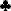
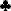

Mount Olympus
From Wikipedia, the free encyclopedia
Mount Olympus is a solitaire card game using two decks of 52 playing cards
each. It is probably named because of the tableau's mountain shape and shows
all the Kings and Queens in the end, if won successfully, like the Greek gods
and goddesses who are said to be residing on the mountain with the same name.
First, all aces and deuces, or twos (16 cards in all), are removed from the
two decks. Then the remaining 88 cards are shuffled and nine of them are laid
out on the tableau in an inverted "V" formation. Although this is one of the
two bases mentioned above that gives the game its name, the player can opt to
just lay the nine cards in a straight line. These nine cards start each of the
nine piles in the tableau.
Building on the 16 foundations is up by suit in intervals of two. Therefore,
building should be like this:
On the aces: 3-5-7-9-J-K
On the deuces: 4-6-8-10-Q
Building on the tableau is down, also by suit in intervals of two (i.e. the
5 must be placed over the 7). A card can be placed over an applicable card and any
gap must be filled immediately with a card from the stock. A sequence of cards
(such as 6-8-10) can be moved as one unit.
Any card can be placed on the foundation at any appropriate time.
must be placed over the 7). A card can be placed over an applicable card and any
gap must be filled immediately with a card from the stock. A sequence of cards
(such as 6-8-10) can be moved as one unit.
Any card can be placed on the foundation at any appropriate time.
Once all possible moves have been made or the player has done all moves he
wanted to make, a new set of nine cards are dealt, one for each pile. Moving,
filling gaps with new cards, and dealing a new set of nine cards continue
until the stock has been used up. After this has happened, building continues,
but spaces left behind are not filled.
The game is successfully won when all cards are built with the Kings and
Queens at front.
(Retrieved from http://en.wikipedia.org/wiki/Mount_Olympus_(solitaire))
Glossary
General rules
Back to the index